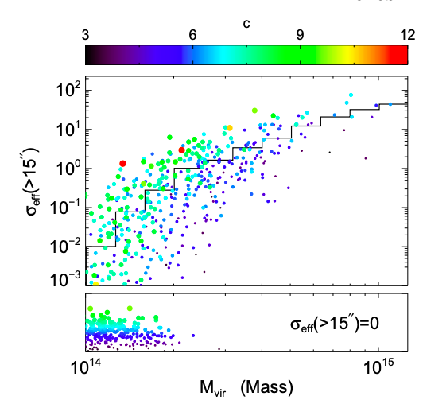
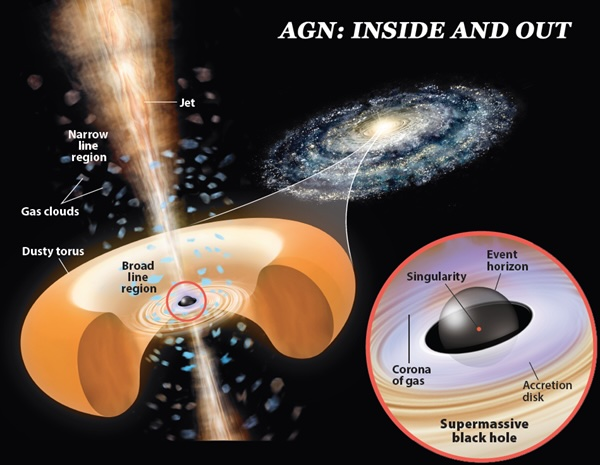
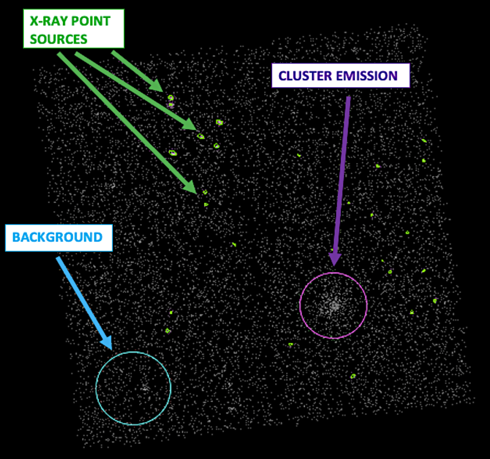
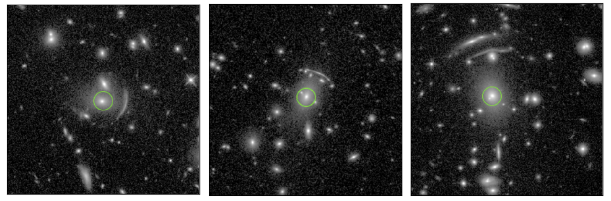
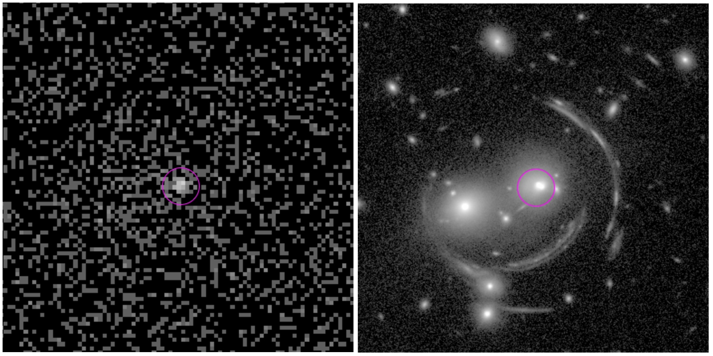

AGN in Strong Lensing Galaxy Clusters

This project uses Chandra X-ray Observatory, Hubble Space Telescope, and WISE catalog images to identify brightest cluster galaxies that are "active" (active galactic nuclei; AKA supermassive black holes) in the centers of strong lensing galaxy clusters. I'm starting with a lot of astro lingo, so I'll explain each piece below.


Galaxy clusters are composed of 100s to 1000s of gravitationally bound galaxies. These are the most massive structures in the universe. Galaxy clusters have extremely strong gravitational fields, causing some of them to be strong lensing. Strong lensing is the bending of light because of the presence of a strong gravitational field (and the consequent bending of spacetime). It's the same principle as light bending (refraction) when it travels through different materials (air, water, etc.).

In the image above, we see two images of the same fish and the same mug in a fish tank because of light bending. The same effect happens with obejcts in space. When a background object is strongly lensed by a galaxy cluster, the background object can get distorted and appear as multiple images. Extended streaks of light are classic signs of strong lensing (called Einstein rings), which can be seen in our sample of strong lensing galaxy clusters below.

The cause of a cluster being strong lensing or non-lensing is not well known. The plot below displays the strong lensing cross section (probability of a cluster being strong lensing) against mass, and the data points at constant mass vary 2-3 orders of magnitude in strong lensing cross section. This suggests that mass is not a direct indicator of strong lensing likelihood and there must be other physcial properties that cause strong lensing. Is there something about the galaxy population of clusters that contribute to their strong lensing likelihood?

In the centers of most galaxy clusters is a highly luminious and massive galaxy, called the brightest cluster galaxy (BCG). There can be multiple BCGs, if, for example, two galaxy clusters merged together, but generally each galaxy cluster has one BCG. They can be identified in the cluster gallery two figures above as a bright, large, circlular object in the center of an Einstein ring.
Thinking more broadly, a BCG is a massive galaxy, and at the center of most large galaxies is a supermassive black hole. Black holes are either dormant, meaning they are not 'feeding' on any matter, or active, meaning that they are consuming gas and emitting lots of energy. These active black holes are called active galactic nuclei (AGN - see the diagram below, courtesy of astronomy.com). AGN form in galaxies when cool gas falls deep into the central gravitational potential well of a galaxy - right where a black hole resides. The frequency of AGN in the central BCGs of galaxy clusters could tell us about the gas environment in clusters. Higher AGN frequency in BCG would increase the mass density of galaxy clusters (more cool gas in the center of the galaxy cluster) which may increase the strong lensing cross section of those galaxy clusters.

For this project, we aim to identify AGN in BCG in a strong lensing selected sample of galaxy clusters and compare our strong lensing AGN-hosting BCG fraction to that of a general mass selected sample of galaxy clusters. If our fraction is higher, that may suggest that the presence of AGN increases the mass density of galaxy clusters enough to increase their strong lensing cross section.
AGN are extremely energic objects. Gas being pulled into a black hole via an accretion disk is hot and travels fast, so AGN efficiently convert potential energy into high energy radiation. Therefore, we can observe X-ray radiation (which is high energy) from AGN. We use Chandra X-ray Observatory images of 32 strong lensing galaxy clusters to ultimately identify X-ray AGN in the cluster fields. The X-ray images display three components (see image below): 1) background X-ray emission that is not from the cluster, 2) a dense but spatially extended region of X-ray emission which is the galaxy cluster, and 3) dense point sources (spatially small) of X-ray emission which are the potential AGN we are interested in.

These X-ray point sources were identified using Chandra's X-ray analysis software CIAO (Chandra Interactive Analysis of Observations), and they have the potential to be AGN. Most AGN have a lot of X-ray emission and all are relatively small (compared to a galaxy), so in our field of view using Chandra observations, we expect AGN to appear as X-ray point sources. These point sources, however, could be other objects like stars, so our next focus is identifying which point sources are actually AGN in the centers of galaxy clusters.
This calls for Hubble Space Telescope (HST) infrared images of the clusters. These images capture a much smaller and detailed field than the Chandra observations, meaning that we can identify individual galaxies within each cluster, including the BCG (a bright galaxy that typically resides in the center of a cluster). Remember, our overall goal is to look at the population of BCG that have an AGN, so the X-ray point sources that we are interested in studying must overlap with the location of a BCG. Below are HST images of 3 clusters with their BCG circled in green; you can even see some Einstein rings (a strong lensing signiture) in these zoomed-in images.

Out of our 32 clusters, we find that an X-ray point source aligns with a BCG in 7 of the clusters. Great! This narrows down the list of potential AGN we want to include in our study. Now we must determine if any of the 6 objects are actually AGN. We use two criteria to determine if these sources are AGN: 1) hardness and 2) "point-like-ness". Hardness is a measurement that describes the overall energy of the photons emitted from an object. We know that these sources are emitting X-ray photons, but those can span a range of energies. "Soft" X-ray photons refers to low energy X-ray photons, and "hard" X-ray photons referes to high energy X-ray photons. AGN are expected to emit lots of high energy (hard) X-ray photons, therefore, we will only consider sources with a hardness ratio that is higher (emitting more hard X-ray photons) than its surrounding as an AGN. This is true for 3 of our 6 potential AGN. "Point-like-ness" is a description of each source's size / compactness in X-ray images. As mentioned earlier, we expect AGN to appear as small point sources; however, the point source detection algorithm that we used identified some blobs of photons as point sources that are more spatially extended (spread out) than AGN would be. Out of the 3 sources that passed our hardness criteria, only 1 appears truly "point-like" (see image below). This means that out of our sample of 32 clusters, only one has an X-ray AGN-hosting BCG.

Notice how I just said "X-ray AGN"-hosting BCG. That's because not all (most) AGN can be detected by X-ray photon observations. Sometimes, the X-ray emission from AGN can be absorbed by dust and re-emitted as infrared photons. This means that we cannot see these AGN in Chandra X-ray images. To get a more complete picture of the AGN-hosting BCG population of strong lensing clusters, we must consider the AGN that we miss using X-ray images. To find these missing AGN, we use infrared data from the WISE (Wide-Field Infrared Survey Explorer) catalog. The presence of an AGN will impact the overall color of a galaxy, which we can extract from WISE infrared observations. We use WISE data of each BCG in our sample to see if their color is higher (more red) than what we'd expect from a galaxy to see if there are any additional AGN in our sample. Doing this analysis, we find 1 AGN that is detectable using infrared colors which we cannot see in X-ray images. This brings our total AGN-hosting BCG count to 2 our of 36 BCG. You might be a little confused by me saying 36 BCG when we only have a sample of 32 clusters. Remember how I said that some clusters may have multiple BCG (if a major event like a merger of multiple clusters occurs)? Well this was the case for 4 of our clusters, including the one in the image right before this paragraph (you can see 2 BCG). This small detail isn't the main focus of our work, but it still is cool!